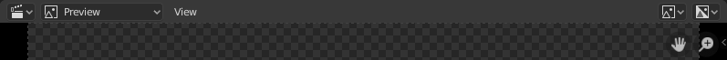

简介¶
序列编辑器预览用于显示序列编辑器时间轴的渲染结果。这可进一步配置为来自确定的通道，叠加或图像分析器（范围）的输出显示。可以 NumpadPlus 放大视图， NumpadMinus 缩小视图。
标题栏¶

序列编辑器标题栏。¶
显示模式¶
Mode to show different aspects of the composite result, for the current frame:
- 图像预览
Render image preview.
- 亮度波形
Brightness/contrast analyzer.
- 色度矢量示波图
Color hue and saturation analyzer.
- 直方图
RGB distribution histogram.
显示通道¶
- Color and Alpha
通过棋盘模式使用透明度来显示预览图像。
- 颜色
忽视预览图像的透明度（所有透明区域将不显示）。
小部件¶
在序列编辑器预览区域使用装配器来移动和缩放图像。